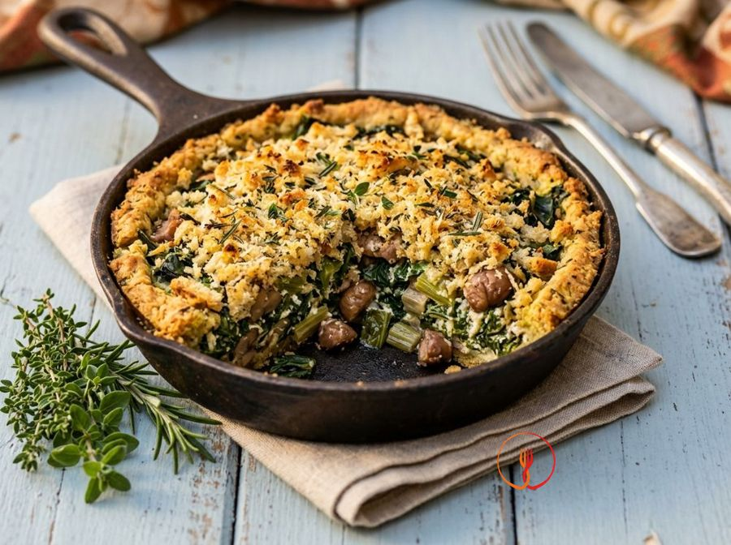

Swiss chard and chestnut tartlet with a herb breadcrumb crust
A refined autumnal starter that combines the earthiness of Swiss chard with the sweetness of chestnuts, encased in a crunchy aromatic breadcrumb crust.
Ingredients
- Fresh Swiss chard800 g
- Pre-cooked chestnuts (boiled and peeled)100 g
- Well-drained cow's milk ricotta200 g
- Medium eggs2
- Grated Parmigiano Reggiano PDO50 g
- Coarsely grated stale bread60 g
- Fresh herbs (thyme, marjoram, rosemary)1 bunch
- Garlic1 clove
- Extra virgin olive oil40 ml
- Nutmeg, salt and black pepperto taste
Allergens
Tree nuts, Gluten, Milk, Eggs
May contain traces of: Celery, Sesame.
Method
- Begin by thoroughly washing 800g of fresh Swiss chard, using a knife to separate the green leaves from the white stalks. Cut the stalks into small cubes of about half a centimetre and blanch them in plenty of boiling salted water for 5 minutes over high heat. For the final 2 minutes of cooking, add the green leaves, either whole or roughly torn. The result should be tender stalks that aren't mushy and wilted leaves; my advice is not to skip this step as the stalks take much longer to cook than the leaves.
- Once cooked, drain the chard and let it cool slightly in a fine-mesh sieve. When it's cool enough to handle, squeeze it extremely well using your hands or a clean tea towel to remove every trace of excess water, then finely chop it with a sharp knife. This step is crucial to prevent the flan from becoming watery at the bottom; ensure the vegetable feels almost 'dry' to the touch. My advice is to spend an extra minute on the squeezing: the firmness of your flan depends entirely on this.
- In a non-stick frying pan, heat about 15ml of extra virgin olive oil with a lightly crushed garlic clove over medium heat. Add the chopped chard and 100g of pre-cooked chestnuts, crumbled roughly by hand, and sauté for about 5 minutes. You should smell an intense aroma and see the vegetables losing the last bit of moisture, becoming glossy and flavourful. My advice: remove the garlic as soon as it starts to turn golden to prevent it from releasing an overpowering bitter aftertaste.
- In a large bowl, work 200g of well-drained ricotta with a fork or a hand whisk until it becomes creamy. Add the 2 medium eggs, 50g of grated Parmesan cheese, and a generous grating of fragrant nutmeg. Mix vigorously until you obtain a homogeneous, smooth cream with a lovely pale yellow colour. My advice is to use high-quality ricotta and ensure it has been draining in the fridge for at least an hour before use.
- Add the now lukewarm chard and chestnut mixture to the previously prepared ricotta cream. Season with salt and freshly ground black pepper, then fold everything together well with a spatula or wooden spoon using circular motions. You will get a dense filling, speckled with the green of the chard and crunchy chestnut pieces, with an irresistible spicy scent. My advice: always taste a small piece of chard before salting, as the Parmesan is already salty and we don't want to overdo it.
- Prepare the aromatic crumb by mixing 60g of coarsely grated stale bread in a small bowl with the bunch of fresh herbs (thyme, marjoram, rosemary), finely chopped with a knife. Pour in the remaining 25ml of extra virgin olive oil and mix well with your fingertips so the bread is evenly coated. The consistency should be like fragrant wet sand, ready to become crispy in the oven. My advice is not to use fine industrial breadcrumbs, but to grate the stale bread yourself for a superior, rustic texture.
- Take 4 individual ovenproof moulds (like ramekins or aluminium cups), lightly grease them with a drizzle of oil, and dust the bottom and sides with a portion of the herb breadcrumb mix. Fill each mould with the chard and ricotta mixture, pressing down gently with the back of a spoon to avoid air bubbles and levelling the surface. Finish each flan by generously covering it with the rest of the flavoured breadcrumbs, creating an even layer. My advice: tap the mould lightly on the worktop to settle the mixture well before baking.
- Place the moulds on a baking tray and bake in a preheated static oven at 180°C for about 25 minutes. Towards the end, check that the surface has turned a beautiful golden-blonde colour and the crust feels very crispy when touched with a fork. Once removed from the oven, let the flans rest for at least 5-10 minutes at room temperature before carefully turning them out onto a serving plate. My advice is to be patient during the resting time: the residual heat will stabilise the structure of the flan, making it perfect and firm when cut.
Nutrition facts (estimate)
| Per serving (260 g) | Per 100 g | |
|---|---|---|
| Energy | 1519 kJ / 363 kcal | 582 kJ / 139 kcal |
| Protein | 17 g | 6.5 g |
| Carbohydrates | 26 g | 9.9 g |
| of which sugars | 3.8 g | 1.5 g |
| Fat | 20 g | 7.8 g |
| of which saturates | 6.0 g | 2.3 g |
| Fibre | 5.2 g | 2.0 g |
| Salt | 0.8 g | 0.3 g |
AI estimates based on average CREA / USDA data: indicative only, not a substitute for medical or dietitian advice.
Open the recipe in the app for the shopping list, ingredient sheets and nearby shops.